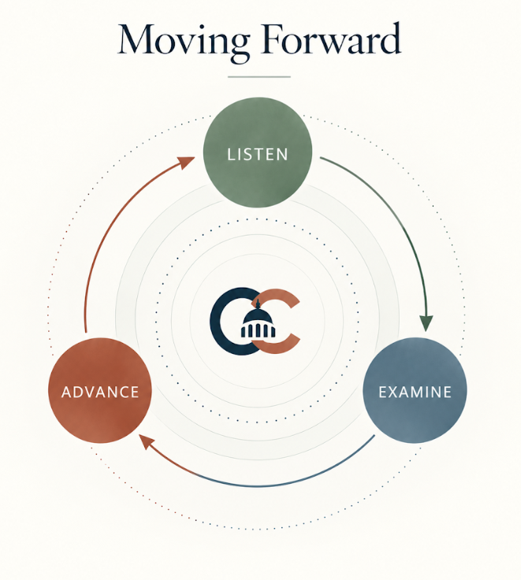

More sustainable
Use resources responsibly and protect the conditions that future generations will depend on.
Cooper Congress brings people across differences to listen carefully, question respectfully, and advance policies that move society forward.

Good ideas can come from any perspective. Their value lies in the future they help build.
Read the missionWe look toward outcomes that matter in everyday life, in the United States and around the world.
Use resources responsibly and protect the conditions that future generations will depend on.
Build communities and systems that can adapt, recover, and keep serving people through change.
Make better use of time, public resources, and human effort to solve real problems.
Measure progress by whether people can live healthier, safer, freer, and more fulfilling lives.
Our values ask us to stay open to people, rigorous about ideas, and focused on useful change.
Read all three valuesOur scholarship recognizes students who turn civic commitment into practical work.
From patient advocacy to Illinois legislation, Lauryn has worked across local, state, and federal policy to improve responses to tick-borne disease.
Meet LaurynFinlay founded the Santa Monica Youth Advisory Council and helped young people take part in civic decisions and community service.
Meet Finlay